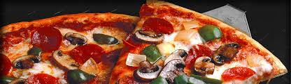

Pizzáink
|
Hiszünk abban, hogy az egészséges és választékos étkezés a kiegyensúlyozott életstílus egyik alappillére. Ételeink tartalmazzák az egészséges táplálkozáshoz szükséges fehérjéket, szén-hidrátokat, vitaminokat, kalciumot; valamint a választott feltéttől függően friss zöldséget és gyümölcsöt. Büszkék vagyunk arra, hogy kiváló minőségű ételeinkkel hozzájárulunk az egészséges életvitel kialakításához. |
| Éttermünk igény esetén az ételt házhoz szállítja. A rendeléseket telefonon és interneten keresztül is le lehet adni. Járműparkunk 6 gépkocsiból áll. Flottánkat folyamatosan fejlesztjük annak érdekében, hogy a kiszállított ételek minél hamarabb megrendelőink asztalára kerüljenek. A rendeléseket hőtartó dobozokban Debrecen belterületén házhoz szállítjuk. |